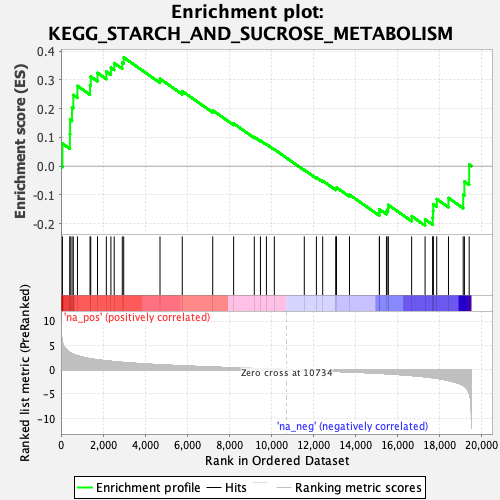
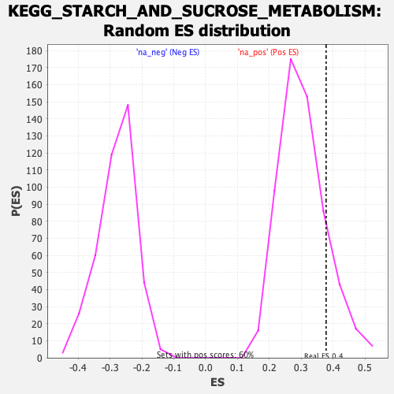

| | | Dataset | PFS |
| Phenotype | NoPhenotypeAvailable |
| Upregulated in class | na_pos |
| GeneSet | KEGG_STARCH_AND_SUCROSE_METABOLISM |
| Enrichment Score (ES) | 0.37810498 |
| Normalized Enrichment Score (NES) | 1.2374326 |
| Nominal p-value | 0.16806723 |
| FDR q-value | 0.9452852 |
| FWER p-Value | 1.0 |
Table: GSEA Results Summary

Fig 1: Enrichment plot: KEGG_STARCH_AND_SUCROSE_METABOLISM
Profile of the Running ES Score & Positions of GeneSet Members on the Rank Ordered List
| SYMBOL | RANK IN GENE LIST | RANK METRIC SCORE | RUNNING ES | CORE ENRICHMENT | | 1 | AGL | 68 | 5.596 | 0.0784 | Yes |
| 2 | PGM2L1 | 422 | 3.491 | 0.1113 | Yes |
| 3 | AMY1A | 433 | 3.458 | 0.1614 | Yes |
| 4 | HK3 | 523 | 3.270 | 0.2047 | Yes |
| 5 | UGT2B7 | 585 | 3.139 | 0.2475 | Yes |
| 6 | PGM1 | 782 | 2.839 | 0.2790 | Yes |
| 7 | PYGL | 1381 | 2.226 | 0.2808 | Yes |
| 8 | AMY1B | 1415 | 2.193 | 0.3112 | Yes |
| 9 | AMY1C | 1736 | 2.009 | 0.3242 | Yes |
| 10 | UGP2 | 2156 | 1.787 | 0.3289 | Yes |
| 11 | UGT2A3 | 2374 | 1.697 | 0.3426 | Yes |
| 12 | TREH | 2531 | 1.624 | 0.3583 | Yes |
| 13 | HK2 | 2915 | 1.475 | 0.3602 | Yes |
| 14 | GBA3 | 2982 | 1.453 | 0.3781 | Yes |
| 15 | GYS2 | 4709 | 0.977 | 0.3038 | No |
| 16 | GYS1 | 5768 | 0.766 | 0.2607 | No |
| 17 | MGAM | 7216 | 0.514 | 0.1939 | No |
| 18 | ENPP1 | 8211 | 0.363 | 0.1482 | No |
| 19 | PYGB | 9194 | 0.222 | 0.1011 | No |
| 20 | GBE1 | 9487 | 0.178 | 0.0887 | No |
| 21 | AMY2A | 9770 | 0.137 | 0.0762 | No |
| 22 | UGDH | 10147 | 0.084 | 0.0582 | No |
| 23 | GCK | 11572 | -0.117 | -0.0132 | No |
| 24 | UGT2B4 | 12148 | -0.204 | -0.0398 | No |
| 25 | G6PC | 12447 | -0.252 | -0.0514 | No |
| 26 | GANC | 13066 | -0.355 | -0.0779 | No |
| 27 | AMY2B | 13104 | -0.363 | -0.0745 | No |
| 28 | PGM2 | 13721 | -0.463 | -0.0993 | No |
| 29 | ENPP3 | 15143 | -0.751 | -0.1613 | No |
| 30 | UGT2B15 | 15146 | -0.752 | -0.1504 | No |
| 31 | GPI | 15480 | -0.830 | -0.1553 | No |
| 32 | G6PC2 | 15555 | -0.849 | -0.1467 | No |
| 33 | GAA | 15564 | -0.851 | -0.1347 | No |
| 34 | HK1 | 16678 | -1.206 | -0.1742 | No |
| 35 | UGT2B11 | 17317 | -1.462 | -0.1855 | No |
| 36 | PYGM | 17680 | -1.658 | -0.1798 | No |
| 37 | GUSB | 17694 | -1.666 | -0.1561 | No |
| 38 | UXS1 | 17707 | -1.677 | -0.1322 | No |
| 39 | UGT2B28 | 17871 | -1.777 | -0.1146 | No |
| 40 | UGT2B10 | 18430 | -2.224 | -0.1107 | No |
| 41 | UGT2B17 | 19130 | -3.201 | -0.0997 | No |
| 42 | SI | 19188 | -3.365 | -0.0534 | No |
| 43 | UGT1A1 | 19415 | -4.825 | 0.0056 | No |
Table: GSEA details [plain text format]

Fig 2: KEGG_STARCH_AND_SUCROSE_METABOLISM: Random ES distribution
Gene set null distribution of ES for KEGG_STARCH_AND_SUCROSE_METABOLISM